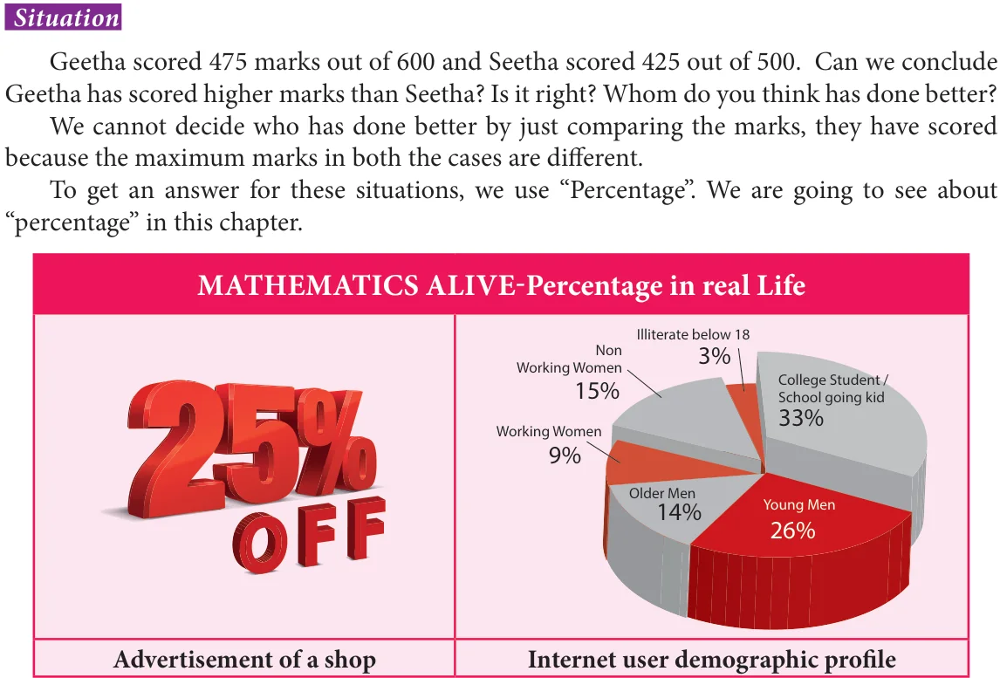
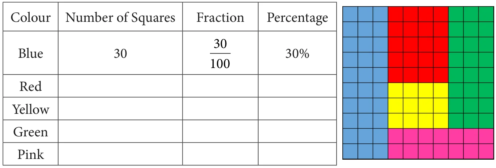
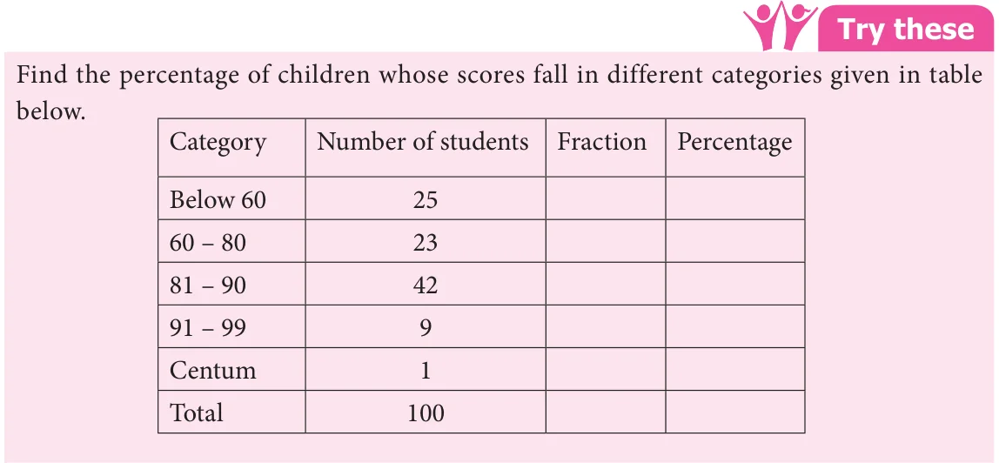
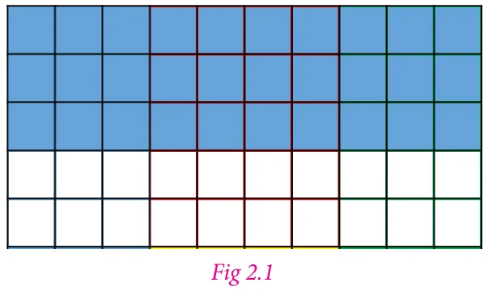
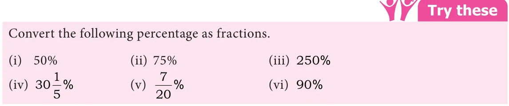
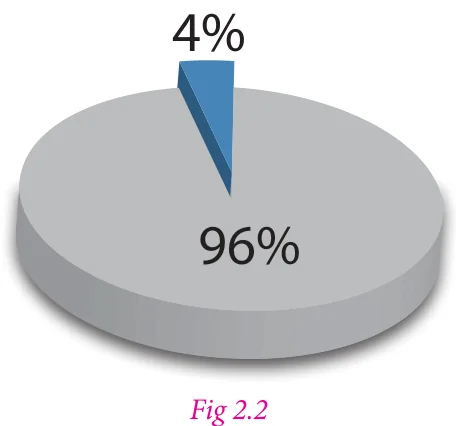
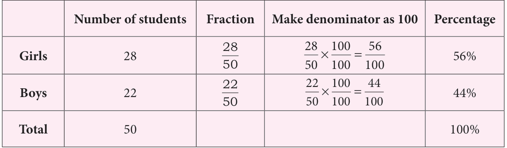

Chapter
2
PERCENTAGE AND SIMPLE INTEREST
Learning Objectives
- To understand the meaning of per cent.
- To convert a fraction into percentage and vice-versa.
- To convert a decimal number into percentage and vice-versa.
- To solve problems on percentage.
- To find simple interest by formula.
- To apply simple interest formula in different situations.
2.1 Introduction
We have already been introduced to the concepts such as 'Ratio and proportion', unitary method and its use in solving day-to-day application problems. Also, ratio has been explained as a method of comparison by division. One of the most common methods to compare two quantities is by using percentage.

Per cent is derived from the Latin word 'Per centum' meaning 'per hundred'. Per cent is denoted by the symbol '%' and means hundredth too. That is 1% means 1 out of hundred or one hundredth which can be written as \(1\% = \frac{1}{100} = 0.01\). It is read as 1 per cent.
In the same way, 50% means 50 out of hundred or fifty hundredth. That is \(50\% = \frac{50}{100} = 0.50\)
80% means 80 out of hundred or eighty hundredth. That is \(80\% = \frac{80}{100} = 0.80\)
20% means 20 out of hundred or twenty hundredth. That is \(20\% = \frac{20}{100} = 0.20\)
To understand this let us do the following activity.
Activity
Take a \(10 \times 10\) square grid to recall the previous knowledge on fraction. The grid is shaded using 5 different colours. The particulars related to blue colour shaded portion shown in the grid is given in the table below. Observe the grid and complete the table.

From this we can understand that percentage can be written as a fraction with denominator hundred.

In all these examples, the total number of items add upto 100. Can we calculate those percentage of items if the total number do not add upto 100? Yes. We can find the percentage of items. In such cases we need to convert the given fractions to their equivalent fraction with denominator 100.
For example consider a \(5 \times 10\) square grid.

In the Fig 2.1, the blue shaded portion of the grid represents the fraction \(\frac{30}{50}\). Which is equal to \(\frac{60}{100}\) or 0.60 or 0.6 or 60%.
Try these
There are 50 students in class VII of a school. The number of students involved in these activities are :
Scout \(-\) 7 Red Ribbon Club \(-\) 6 Junior Red Cross \(-\) 9 Green Force \(-\) 3
Sports \(-\) 14 Cultural activity \(-\) 11
Find the percentage of students who involved in various activities.
2.1.1 Converting Fraction to Percentage
All numbers which are represented using numerator and denominator are fractions. They can have any number as a denominator. If the denominator of the fraction is hundred then it can be very easily expressed as a percentage. Let us try to convert different fraction to percentage.
Example 2.1 Write \(\frac{1}{5}\) as per cent.
Solution
We have \(\frac{1}{5} = \frac{1}{5} \times \frac{100}{100} = \frac{1}{5} \times 100\% = \frac{100}{5}\% = 20\%\).
Example 2.2 Convert \(\frac{7}{4}\) to per cent.
Solution
We have \(\frac{7}{4} = \frac{7}{4} \times \frac{100}{100} = \frac{7}{4} \times 100\% = \frac{700}{4}\% = 175\%\).
Example 2.3 Out of 20 beads, 5 beads are red. What is the percentage of red.
Solution
We have \(\frac{5}{20} = \frac{5}{20} \times \frac{100}{100} = \frac{5}{20} \times 100\% = \frac{500}{20}\% = 25\%\).
Example 2.4 Convert the fraction \(\frac{23}{30}\) as per cent.
Solution
We have \(\frac{23}{30} = \frac{23}{30} \times \frac{100}{100} = \frac{23}{30} \times 100\% = 76\frac{2}{3}\%\)
From these examples we see that the percentage of proper fractions are less than 100 and that of improper fractions are more than 100.
Try these
Convert the fractions as percentage.
- \(\frac{1}{20}\)
- \(\frac{13}{25}\)
- \(\frac{45}{50}\)
- \(\frac{18}{5}\)
- \(\frac{27}{10}\)
- \(\frac{72}{90}\)
2.1.2 Converting percentage as fraction
A percentage is a number or ratio expressed as a fraction of 100. Here, let us try to convert different percentage to fraction.
Example 2.5 Write the following percentage into fraction.
(i) 60% (ii) 125% (iii) \(\frac{3}{5}\%\) (iv) \(\frac{15}{10}\%\) (v) \(28\frac{1}{3}\%\)
Solution
(i) \(60\% = \frac{60}{100} = \frac{6}{10} = \frac{3}{5}\)
(ii) \(125\% = \frac{125}{100} = \frac{5}{4}\)
(iii) \(\frac{3}{5}\% = \frac{\frac{3}{5}}{100} = \frac{3}{500}\)
(iv) \(\frac{15}{10}\% = \frac{\frac{15}{10}}{100} = \frac{\frac{3}{2}}{100} = \frac{3}{200}\)
(v) \(28\frac{1}{3}\% = \frac{28\frac{1}{3}}{100} = \frac{\frac{85}{3}}{100} = \frac{17}{60}\)

Example 2.6 In a survey one out of five people said they preferred a particular brand of soap. Convert it into percentage?
Solution
Fraction \(= \frac{1}{5}\)
Percentage \(= \frac{1}{5} \times 100\% = 20\%\)
Example 2.7 75 students from a Government High school appeared for S.S.L.C. examination. 72 of them are declared passed in the examination. Find the percentage of students passed.
Solution

Total number of students \(= 75\)
Number of students declared passed \(= 72\)
Percentage \(= \frac{72}{75} \times 100\%\)
\(= \frac{24}{25} \times 100\%\)
\(= 24 \times 4\%\)
\(= 96\%\).
Note
All the parts of the whole when added together gives the whole or 100%. So out of 2 parts if we are given 1 part we can definitely find the other part. That is in the above example, if 96% of the students has passed means, 96 out of 100 has passed and the remaining \((100-96)\%\) 4% have failed.
Example 2.8 In a class of 50 students if 28 are girls and 22 are boys then express boys and girls in percentage.
Solution
Let us find the percentage of boys and girls. It is given in the form of table below.

To find the percentage of boys and girls we can also use unitary method or multiply both numerator and denominator by a same number which makes denominator 100.
Example 2.9 There are 560 students in a school. Out of 560 students, 320 are boys. Find the percentage of girls in that school.
Solution
Total number of students \(= 560\)
Number of boys \(= 320\)
Number of girls \(= 560 - 320 = 240\)
Percentage \(= \frac{240}{560} \times 100\% = \frac{24}{56} \times 100\%\)
\(= \frac{3}{7} \times 100\% = \frac{300}{7}\%\)
\(= 42.86\%\)
Think
- What is the difference between 0.01 and 1%?
- In a readymade shop there will be a board showing upto 50% off. Most of the people will realize that everything is half of its original price, Is that true?